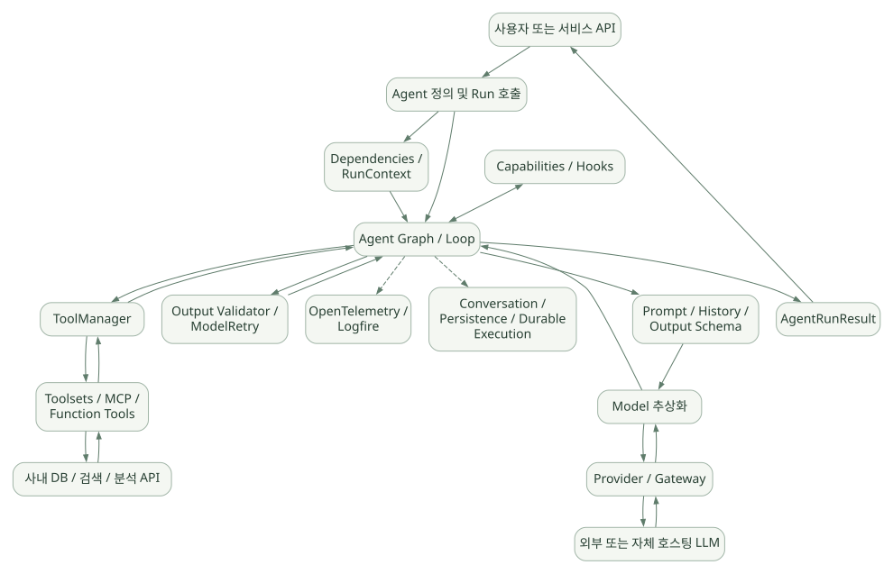
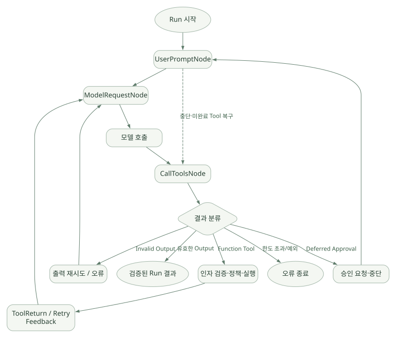

핵심 원리 / 단원 05
세 노드로 실행 흐름 따라가기
UserPromptNode → ModelRequestNode → CallToolsNode
먼저 연결해 보기
Agent 내부는 입력 준비, 모델 요청, 응답 분류와 도구·출력 처리로 이어지는 Graph를 사용합니다. 미완료 도구나 승인 결과가 있으면 새 질문을 받았다고 즉시 모델부터 호출하지 않을 수도 있습니다.
Hooks와 Capabilities는 이 흐름의 여러 실행 지점에 개입하는 Python 구성요소입니다. 단순한 지시문이나 Skill 파일과 구분하고, 조합 순서·예외·스트리밍 경로의 조건을 함께 확인하세요.
읽는 관점정상 반복뿐 아니라 재개, 검증 실패, 승인 대기와 오류 종료를 도식과 본문에서 연결하세요.
11. PydanticAI의 전체 아키텍처#
11.1 개념적 구성도#
넓은 도식은 가로로 이동하며 읽을 수 있습니다. 도식 크게 보기 ↗

원문에 수록된 학습용 도식입니다. 노드·화살표·분기 라벨을 보존해 다시 배치했습니다. 세부 조건과 예시·구현의 구분은 앞뒤 본문을 함께 읽으세요.
도식 원문 보기 (Mermaid)
flowchart TB
U[사용자 또는 서비스 API] --> A[Agent 정의 및 Run 호출]
A --> DI[Dependencies / RunContext]
A --> G[Agent Graph / Loop]
DI --> G
CAP[Capabilities / Hooks] <--> G
G --> PA[Prompt / History / Output Schema]
PA --> M[Model 추상화]
M --> PR[Provider / Gateway]
PR --> L[외부 또는 자체 호스팅 LLM]
L --> PR --> M --> G
G --> TM[ToolManager]
TM --> TS[Toolsets / MCP / Function Tools]
TS --> RES[사내 DB / 검색 / 분석 API]
RES --> TS --> TM --> G
G --> V[Output Validator / ModelRetry]
V --> G
G --> R[AgentRunResult]
R --> U
G -.-> OBS[OpenTelemetry / Logfire]
G -.-> P[Conversation / Persistence / Durable Execution]이 다이어그램은 역할을 이해하기 위한 [해석] 계층도이다. 실제 구현에서는 Hook·Capability·Toolset 등 일부 계층이 별도 래퍼로 결합되고, 요청 준비·메시지 이력 갱신이 한 번의 선형 경로만으로 이루어지지는 않는다. [S03][S12][C01][C02]
11.2 개발자가 구현하는 범위#
| 개발 항목 | PydanticAI의 도움 | 일반적으로 개발자가 해야 할 일 |
|---|---|---|
| Agent Loop | 모델 재호출, Tool/출력 분기 내장 | 업무상 종료·승인 기준 설계 |
| Tool 등록·검증 | 스키마화, 인자 검증, Tool 호출 분기 | 실제 DB/API 함수 구현, 권한, 실패 정책 |
| Structured Output | 타입 검사 및 Validator 연계 | 실데이터 기준 검증, 증빙·인과 검토 |
| Conversation | 메시지 구조·재사용·직렬화 | DB 저장, 보존·삭제, 인증·격리 |
| Memory/Skills | Harness에서 기능 제공 | 지식 구조, 접근 권한, 업데이트 승인 |
| Observability | OTel/Logfire 연동 | 민감정보 필터링, 운영 지표·경보 |
| Evals | 평가 도구·데이터셋 API | 평가용 정답·실험설계·비교 지표 |
| Deployment | 여러 통합·실행 기능 | 운영 인프라·CI/CD·보안 심사 |
12. 내부 Agent Loop — 모델 요청부터 완료까지#
12.1 가장 중요한 핵심#
공식 Agent 문서는 각 Agent가 내부적으로 pydantic-graph를 사용해 실행 흐름을 관리한다고 설명한다. v2.61.0 코드의 주요 노드는 다음 셋이다. [S03][C02]
UserPromptNode: 입력 메시지·지시문·이력·재개 상태를 준비.ModelRequestNode: 모델 요청을 준비하고 공급자에 호출.CallToolsNode: 모델 응답을 해석하고 Function Tool / Output을 처리해 종료 또는 후속 모델 요청으로 분기.
12.2 상태 전이 다이어그램#
넓은 도식은 가로로 이동하며 읽을 수 있습니다. 도식 크게 보기 ↗

원문에 수록된 학습용 도식입니다. 노드·화살표·분기 라벨을 보존해 다시 배치했습니다. 세부 조건과 예시·구현의 구분은 앞뒤 본문을 함께 읽으세요.
도식 원문 보기 (Mermaid)
flowchart TD
START([Run 시작]) --> U[UserPromptNode]
U --> MR[ModelRequestNode]
U -. 중단·미완료 Tool 복구 .-> CT[CallToolsNode]
MR --> MODEL[모델 호출]
MODEL --> CT
CT --> D{결과 분류}
D -->|Function Tool| T[인자 검증·정책·실행]
T --> REQ[ToolReturn / Retry Feedback]
REQ --> MR
D -->|유효한 Output| END([검증된 Run 결과])
D -->|Invalid Output| RT[출력 재시도 / 오류]
RT --> MR
D -->|Deferred Approval| PAUSE[승인 요청·중단]
PAUSE --> U
D -->|한도 초과/예외| ERR([오류 종료])주의: 실제 코드는 Provider 응답 연속 이어받기, Streaming, Cancellation, Capability Hook, 여러 Tool 동시 요청, Deferred Tool, Resume 등을 포함한다. 도표는 일반 경로 중심의 학습용 단순화이다. [C02][C04]
12.3 시퀀스 관점#
| 순서 | 호출자 → 수신자 | 전달 내용 |
|---|---|---|
| 1 | 사용자 애플리케이션 → Agent / Graph | agent.run(prompt, deps) |
| 2 | Agent / Graph → Agent / Graph | 지시·이력·Tool 정의 구성 |
| 3 | Agent / Graph → Model / Provider | messages + tool schema + output schema |
| 4 | Model / Provider → Agent / Graph | ToolCallPart(query_lot, LOT-A) |
| 5 | Agent / Graph → ToolManager | validate_tool_call |
| 6 | ToolManager → ToolManager | 스키마·권한·Hook 처리 |
| 7 | Agent / Graph → ToolManager | execute_tool_call |
| 8 | ToolManager → 데이터 서비스 | 권한 내 LOT 조회 |
| 9 | 데이터 서비스 → ToolManager | LOT 결과 |
| 10 | ToolManager → Agent / Graph | ToolReturnPart |
| 11 | Agent / Graph → Model / Provider | 결과 포함 후속 요청 |
| 12 | Model / Provider → Agent / Graph | 최종 출력 |
| 13 | Agent / Graph → Agent / Graph | Output Schema + Validator |
| 14 | Agent / Graph → 사용자 애플리케이션 | AgentRunResult |
원문에 수록된 학습용 도식입니다. 호출 순서와 반복·분기 조건을 표 형태의 순서도로 보존했습니다. 세부 조건과 예시·구현의 구분은 앞뒤 본문을 함께 읽으세요.
도식 원문 보기 (Mermaid)
sequenceDiagram
participant App as 사용자 애플리케이션
participant Agent as Agent / Graph
participant Model as Model / Provider
participant TM as ToolManager
participant DB as 데이터 서비스
App->>Agent: agent.run(prompt, deps)
Agent->>Agent: 지시·이력·Tool 정의 구성
Agent->>Model: messages + tool schema + output schema
Model-->>Agent: ToolCallPart(query_lot, LOT-A)
Agent->>TM: validate_tool_call
TM->>TM: 스키마·권한·Hook 처리
Agent->>TM: execute_tool_call
TM->>DB: 권한 내 LOT 조회
DB-->>TM: LOT 결과
TM-->>Agent: ToolReturnPart
Agent->>Model: 결과 포함 후속 요청
Model-->>Agent: 최종 출력
Agent->>Agent: Output Schema + Validator
Agent-->>App: AgentRunResult12.4 Agent Loop와 Workflow의 차이#
13. Hooks와 Capabilities: 런타임을 어떻게 확장하는가?#
13.1 Hooks란?#
모델 요청 전후, Tool 호출 전후, Run 수명주기 등 특정 실행 지점에 개발자 로직을 개입시키는 확장 지점이다. 공식 Hooks와 Capabilities 문서를 참조하면 다음과 같은 사용례를 볼 수 있다. [S12][S18]
before_run: 실행 시작 전 컨텍스트·정책 준비.before_model_request: 모델 호출 전 메시지/컨텍스트 정책 적용.before_tool_execute: Tool 실행 직전 인자·권한·안전 정책 적용.wrap_tool_execute: 실행을 감싸 타이밍·트레이싱·정책 처리.on_tool_execute_error: Tool 예외를 분류·처리.after_tool_execute: 도구 결과 후속 처리.wrap_run: Run 전체 수명주기를 감싸기.
확인 중요: 실제 Hook 호출 순서는 Capability 합성과 스트리밍·동시 Tool·Output Tool 경로에 따라 달라진다. 모든 Hook이 모든 Provider Native Tool에 일률적으로 적용된다고 가정하지 말 것. [C03][C06]
13.2 Capability란?#
Capability는 Tool·Instruction·Hook·모델 설정·Model 선택 정책 등을 하나로 묶은 재사용 가능한 Agent 기능 단위다. 공식 문서는 이를 PydanticAI의 주요 확장 추상화라고 설명한다. [S05]
# 개념 시연: 공식 Capability 구성 방식 기반, 미실행
from pydantic_ai import Agent
from pydantic_ai.capabilities import Capability
policy = Capability(
id='fab-policy',
instructions='허용된 데이터와 Tool 결과만 근거로 답해라.',
)
agent = Agent('openai:<model-id>', capabilities=[policy])Capability를 여러 개 조합하면 같은 기능을 여러 Agent에 재사용할 수 있다. Capability ≠ 모델의 Skill 지시문이다. Capability는 프로그램의 실행 지점에 개입할 수 있는 Python 런타임 구성요소이고, Skill은 주로 Agent가 참고할 작업 지침·절차 패키지라는 차이가 있다.
13.3 왜 내부 구조 분석이 필요한가?#
표면상 capabilities=[X, Y]처럼 단순해 보이지만 내부에서는:
- Capability들의 Hook과 설정을 합성한다.
- Agent Run 초기화·실행 단계마다 해당 Hook을 호출한다.
- Toolset·모델 요청·출력 등에 개입한다.
- 예외와 재시도·취소·상태 저장에도 영향을 줄 수 있다.
따라서 같은 기능이라도 원래 Agent API에 생성자 인자를 하나씩 추가하는 방식과 조합 가능한 Capability로 만드는 방식의 설계 장단점을 비교할 수 있다. [C01][C06]